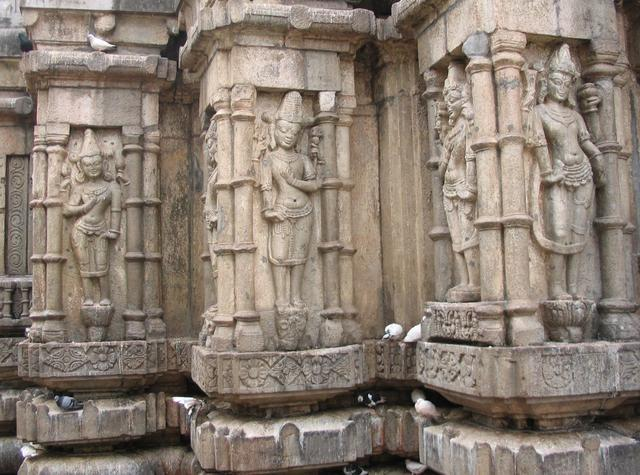
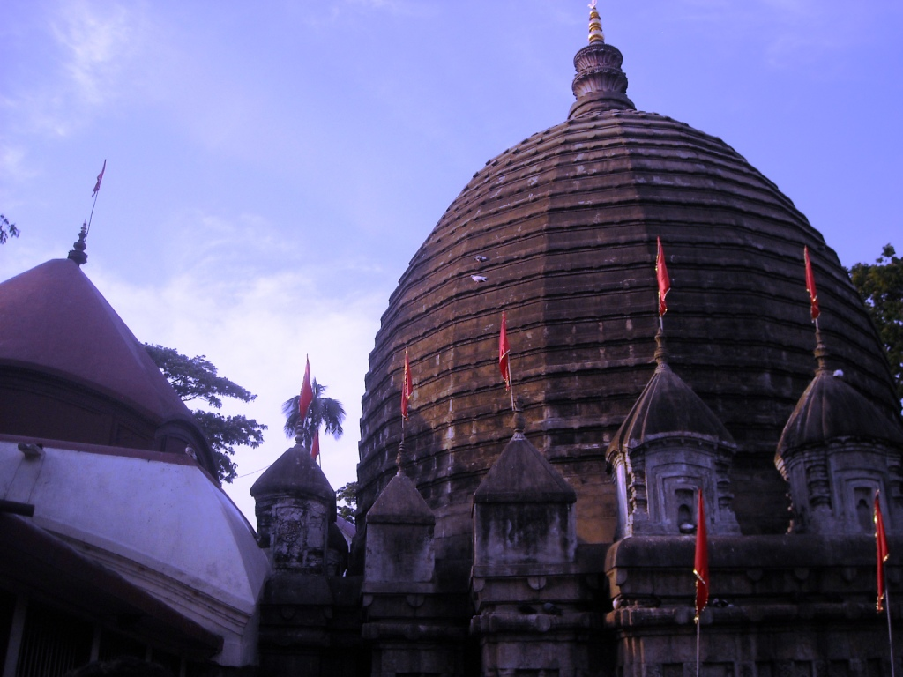
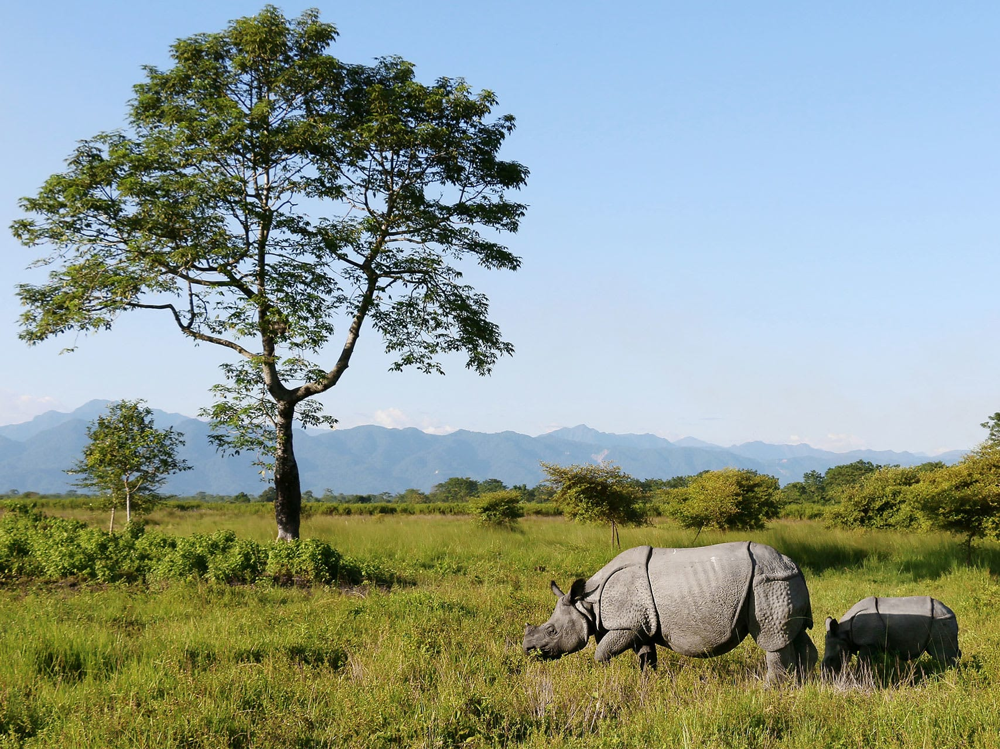
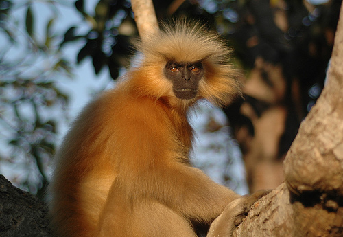
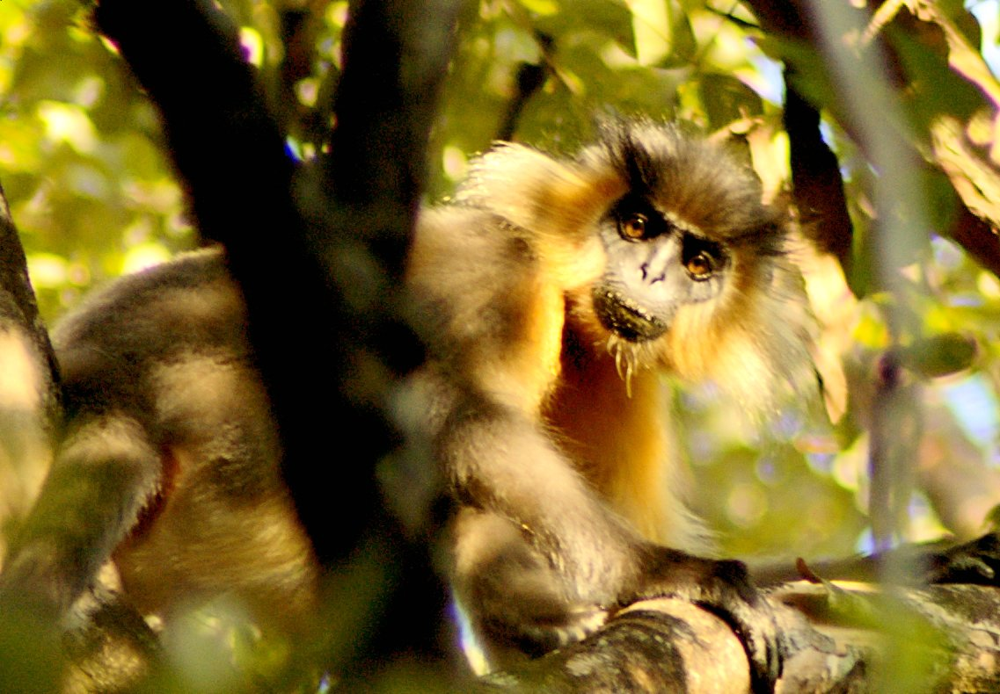
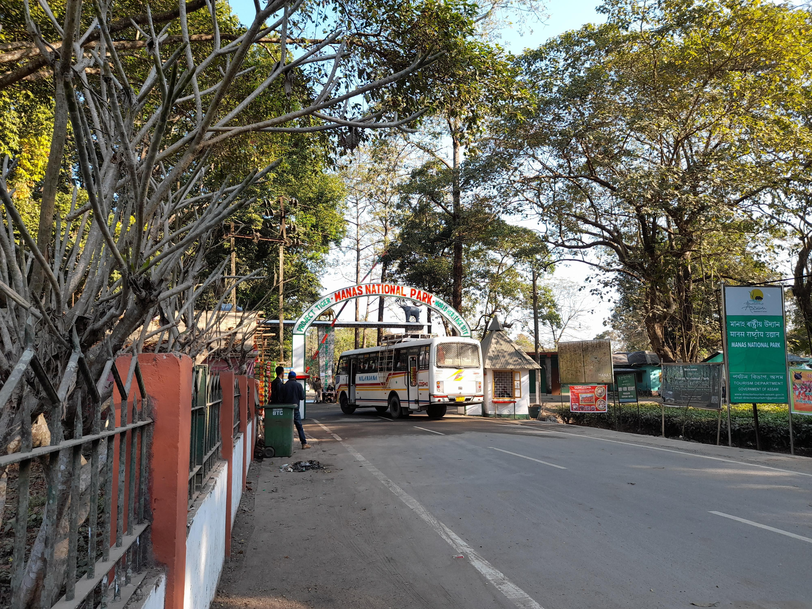
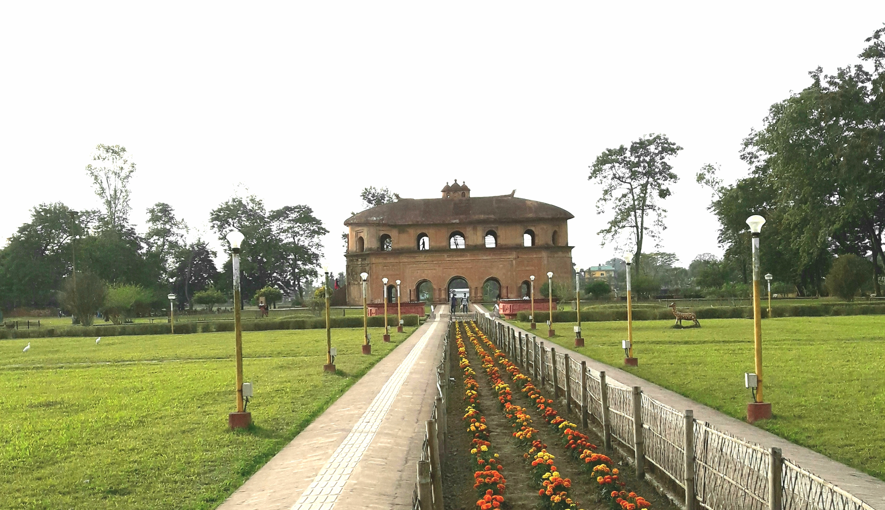
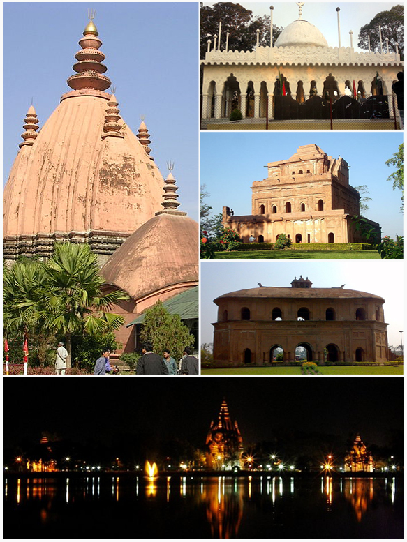
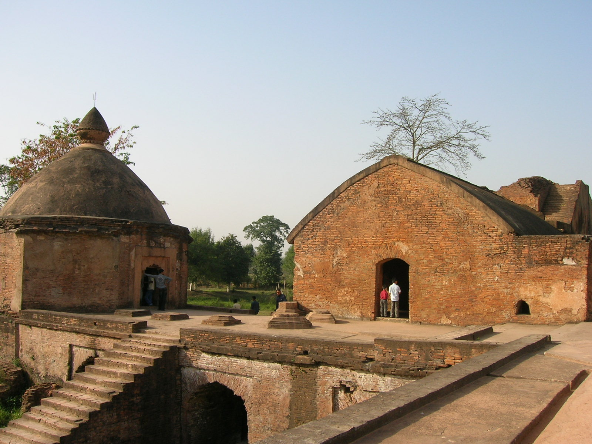

"Assam is the gateway to Northeast India, blessed with the mighty Brahmaputra river, lush tea gardens, ancient temples, and the world's last remaining habitat of the one-horned rhinoceros. It is a land of silk, mustard fields, and Bihu dance — where nature and culture intertwine seamlessly."
"असम, पूर्वोत्तर भारत का प्रवेश द्वार है। यहाँ ब्रह्मपुत्र नदी, चाय के बागान, प्राचीन मंदिर और एक सींग वाले गैंडे का आखिरी आवास है। यह रेशम, सरसों के खेतों और बिहू नृत्य की भूमि है।"
PLACES TO VISIT / घूमने के स्थान


KAZIRANGA NATIONAL PARK
काजीरंगा राष्ट्रीय उद्यान
A UNESCO World Heritage Site and home to 2/3 of the world's one-horned rhinoceros population. Located in Golaghat & Nagaon districts, spanning 430 sq km.
यूनेस्को विश्व धरोहर स्थल। दुनिया के 2/3 एक सींग वाले गैंडे यहाँ रहते हैं। 430 वर्ग किमी में फैला यह उद्यान बाघ, हाथी और 480 से अधिक पक्षी प्रजातियों का घर है।


MAJULI ISLAND
माजुली द्वीप
The world's largest river island, sitting in the Brahmaputra river. Majuli is a living cultural hub of Assam.
ब्रह्मपुत्र नदी में स्थित, दुनिया का सबसे बड़ा नदी द्वीप। 22 वैष्णव सत्र यहाँ 500 वर्षों से असमिया शास्त्रीय नृत्य सुरक्षित करते है।




KAMAKHYA TEMPLE
कामाख्या देवी मंदिर
One of the most sacred Shakti Peethas in India, perched atop Nilachal Hill in Guwahati. Open 5:30 AM to 10 PM.
गुवाहाटी के नीलाचल पर्वत पर स्थित, भारत के सबसे पवित्र शक्तिपीठों में से एक। जून में अम्बुबाची मेला लाखों को आकर्षित करता है।




MANAS NATIONAL PARK
मानस राष्ट्रीय उद्यान
A UNESCO World Heritage Site and Project Tiger Reserve at the foothills of the Himalayas in Bodoland.
हिमालय की तलहटी में स्थित यूनेस्को विश्व धरोहर और प्रोजेक्ट टाइगर रिजर्व। दुर्लभ सुनहरे लंगूर और जंगली जल भैंसे यहाँ पाए जाते हैं।




SIVASAGAR
शिवसागर
The ancient capital of the Ahom Kingdom that ruled Assam for 600 years. Home to the tallest Shiva temple in India.
600 वर्षों तक शासन करने वाले अहोम राज्य की प्राचीन राजधानी। यहाँ का शिवडोल भारत का सबसे ऊँचा शिव मंदिर है।
FOOD & CUISINE / भोजन
MASOR TENGA (माछोर तेंगा)
The soul of Assamese cuisine. A light, tangy fish curry made with rohu or catfish, soured with tomatoes, outenga (elephant apple), or lemon.
असमिया व्यंजन की आत्मा। रोहू या कैटफिश से बना हल्का खट्टा करी, जिसे टमाटर, हाथी सेब या नींबू से खट्टापन दिया जाता है।
DUCK MEAT CURRY with LAUKI
A prized delicacy in Assam — country duck slow-cooked with bottle gourd in mustard oil and black pepper. Uniquely satisfying.
असम में बत्तख का माँस एक विशेष व्यंजन है। देसी बत्तख को लौकी के साथ सरसों के तेल में धीमी आँच पर पकाया जाता है।
PITHA (पीठा - Rice Cakes)
Traditional Assamese rice cakes made during Bihu festival. Til Pitha is sesame & jaggery filled, rolled cylindrical.
बिहू उत्सव पर बनाए जाने वाले पारंपरिक चावल के केक। तिल पीठा में तिल और गुड़ भरा होता है।
KHAR (खार)
A unique alkaline dish made by filtering water through the ash of sun-dried banana peel (kola khar). Subtly smoky taste.
असमिया रसोई का अनोखा क्षारीय व्यंजन। केले के छिलके की राख से छाना हुआ पानी या कच्चे पपीते से बनाया जाता है।
ASSAM TEA (असम चाय)
The world's finest CTC and Orthodox black tea. Grown in the Brahmaputra valley, known for its malty flavor.
दुनिया की सबसे उत्कृष्ट काली चाय। ब्रह्मपुत्र घाटी में उगाई जाती है। इसका माल्टी स्वाद और गहरा लाल रंग है।
SHOPPING / खरीदारी
MUGA SILK (मूगा रेशम)
The world's only naturally golden silk — produced exclusively in Assam. Stronger than regular silk, gets more lustrous with washing.
दुनिया का एकमात्र प्राकृतिक सुनहरा रेशम — सिर्फ असम में उत्पादित। धोने से और चमकदार होता है। GI-टैग प्राप्त।
BAMBOO & CANE CRAFT
Rich tradition of bamboo weaving: traditional fishing traps (jakoi), woven baskets, and furniture. Very artistic and functional.
असम में बांस और बेंत बुनाई की समृद्ध परंपरा है। परंपरागत मछली पकड़ने के जाकोई, टोकरियाँ और सजावटी सामान।
ASSAM TEA (LOOSE LEAF)
Buy directly from estates for best quality. First flush is most prized. Look for whole-leaf Orthodox variety.
सबसे अच्छी चाय सीधे बागानों से खरीदें। फर्स्ट फ्लश (मार्च–अप्रैल) सबसे उत्तम होती है।
MEKHELA CHADOR (मेखेला चादोर)
The traditional two-piece garment of Assamese women. Available in muga, pat silk, and cotton with geometric Assamese motifs.
असमिया महिलाओं का पारंपरिक दो-टुकड़ा परिधान। मूगा, पाट रेशम और सूती में उपलब्ध।